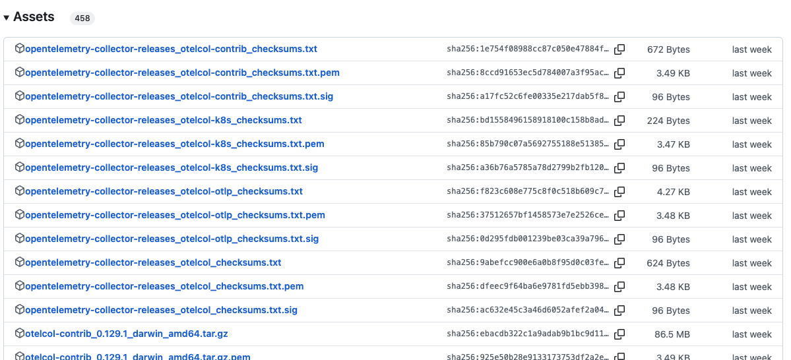

OTel integration - Configuring the collector
There are three things to configure when processing telemetry data through an OTel Collector; a
receiver, processor, and exporter as
shown below. Let's get started by installing an OTel Collector from a released binary:

OTel integration - Installing the collector
Installing the OTel collector on your local machine can be done using a released binary found at
the
OTel Collector Releases page.
Here you find all assets listed, providing the choice for our local operating system. In
this lab all examples are shown using the OSX version of the collector which we download from
the following link (click to download):
On the next slide we will install the OTel collector from the above file.
On the next slide we will install the OTel collector from the above file.

OTel integration - Unpacking the collector
From the location of our downloaded file we can now unpack into a new directory in our workshop
directory:
$ mkdir otelcol-binary
$ cd otelcol-binary
$ tar xzvf {PATH_TO_DOWNLOAD}/otelcol-contrib_0.159.0_darwin_amd64.tar.gz
x README.md
x otelcol-contrib
OTel integration - Verifying the collector
Now let's make sure it's working correctly by running the following command (note you might
have to approve this newly downloaded software first to get it running), which reports the version
of this OTel collector:
$ ./otelcol-contrib -v
otelcol-contrib version 0.159.0
OTel integration - Configuring the receivers
Next we need to configure our collector starting with configuring the
receivers section, where we define a delivery destination that our Fluent
Bit pipeline can push its telemetry (logs) to. Create a new configuration file
workshop-otel.yaml and add the following to provide an OLTP endpoint at
localhost:4317.
# This file is our workshop OpenTelemetry configuration.
#
receivers:
otlp:
protocols:
http:
endpoint: 0.0.0.0:4317
OTel integration - Configuring the exporters
Now expand the configuration file
workshop-otel.yaml with an
exporters section to define where our telemetry (logs) will be sent after
processing. In this case we want to provide for output to the console as follows:
# This file is our workshop OpenTelemetry configuration.
#
receivers:
otlp:
protocols:
http:
endpoint: 0.0.0.0:4317
exporters:
debug:
verbosity: basic
OTel integration - Configuring the processing
Finally, we add a
service section to complete our collector configuration.
Here we are defining the level of log reporting (debug) and creating a
collector pipeline for our logs. We assign specific receivers and
exporters, so that we are receiving through the OTLP
protocol (using our Fluent Bit OTel Envelope) and exporting to the console only:
# This file is our workshop OpenTelemetry configuration.
#
receivers:
otlp:
protocols:
http:
endpoint: 0.0.0.0:4317
exporters:
debug:
verbosity: basic
service:
telemetry:
logs:
level: debug
pipelines:
logs:
receivers: [otlp]
exporters: [debug]
OTel integration - Running the collector
To see if our configuration works we can test run it. Below we use our collector binary installation
from the directory we created to hold all our configuration files:
$ ./otelcol-contrib --config workshop-otel.yaml
OTel integration - Console output collector
The console output should look something like this (scroll to right to view longer lines). Note
the highlighted line shows that the port is open and receiving on
localhost:4317. This runs until exiting with CTRL_C, but for now
LEAVE THE COLLECTOR RUNNING as we need to start sending log events from
our pipeline yet:
2026-07-27T16:16:39.219+0200 debug builders/builders.go:26 Alpha component. May change in the future. {"resource": {"service.instance.id": "76e5d9a0-dfa9-47a3-8df2-86f658dea75c", "service.name": "otelcol-contrib", "service.version": "0.159.0"}, "otelcol.component.id": "debug", "otelcol.component.kind": "exporter", "otelcol.signal": "logs"}
2026-07-27T16:16:39.220+0200 debug builders/builders.go:26 Stable component. {"resource": {"service.instance.id": "76e5d9a0-dfa9-47a3-8df2-86f658dea75c", "service.name": "otelcol-contrib", "service.version": "0.159.0"}, "otelcol.component.id": "otlp", "otelcol.component.kind": "receiver", "otelcol.signal": "logs"}
2026-07-27T16:16:39.220+0200 debug otlpreceiver@v0.159.0/otlp.go:57 created signal-agnostic logger {"resource": {"service.instance.id": "76e5d9a0-dfa9-47a3-8df2-86f658dea75c", "service.name": "otelcol-contrib", "service.version": "0.159.0"}, "otelcol.component.id": "otlp", "otelcol.component.kind": "receiver"}
2026-07-27T16:16:39.221+0200 info service@v0.159.0/service.go:256 Starting otelcol-contrib... {"resource": {"service.instance.id": "76e5d9a0-dfa9-47a3-8df2-86f658dea75c", "service.name": "otelcol-contrib", "service.version": "0.159.0"}, "Version": "0.159.0", "NumCPU": 14}
2026-07-27T16:16:39.221+0200 info extensions/extensions.go:41 Starting extensions... {"resource": {"service.instance.id": "76e5d9a0-dfa9-47a3-8df2-86f658dea75c", "service.name": "otelcol-contrib", "service.version": "0.159.0"}}
2026-07-27T16:16:39.222+0200 info otlpreceiver@v0.159.0/otlp.go:175 Starting HTTP server {"resource": {"service.instance.id": "76e5d9a0-dfa9-47a3-8df2-86f658dea75c", "service.name": "otelcol-contrib", "service.version": "0.159.0"}, "otelcol.component.id": "otlp", "otelcol.component.kind": "receiver", "endpoint": "[::]:4317"}
2026-07-27T16:16:39.222+0200 info service@v0.159.0/service.go:279 Everything is ready. Begin running and processing data. {"resource": {"service.instance.id": "76e5d9a0-dfa9-47a3-8df2-86f658dea75c", "service.name": "otelcol-contrib", "service.version": "0.159.0"}}
...
OTel integration - Adding pipeline outputs
Now we head back to our Fluent Bit pipeline to add an output destination to push our telemetry
data from our pipeline to the collector end point. Add a second entry called
opentelemetry to the exiting outputs section in our configuration file
workshop-fb.yaml as shown (and be sure to save the file when done):
...
outputs:
# This entry directs all tags (it matches any we encounter)
# to print to our console.
- name: stdout
match: '*'
format: json_lines
# this entry is for pushing logs to an OTel collector.
- name: opentelemetry
match: '*'
host: ${OTEL_HOST}
port: 4317
logs_body_key_attributes: true # allows for OTel attribute modification.
OTel integration - Running collector pipeline
To see if our configuration works we can test run it with our Fluent Bit installation. Depending
on the chosen install method, here we show how to run it using the source installation followed
by the container version. Below the source install is shown from the directory we created to hold
all our configuration files:
$ [PATH_TO]/fluent-bit --config workshop-fb.yaml
OTel integration - Console output collector pipeline
The console output from the Fluent Bit pipeline looks something like this. Note that every time
a log event is ingested, it's processed into an OTel Envelope with three lines in the console,
and then sent to the collector on port 4317. Let's go back to the collector console and check
ingestion (Note: This runs until exiting with CTRL_C):
...
[2025/07/10 15:58:01] [ info] [input:dummy:dummy.0] initializing
[2025/07/10 15:58:01] [ info] [input:dummy:dummy.0] storage_strategy='memory' (memory only)
[2025/07/10 15:58:01] [ info] [input:storage_backlog:storage_backlog.1] initializing
[2025/07/10 15:58:01] [ info] [input:storage_backlog:storage_backlog.1] storage_strategy='memory' (memory only)
[2025/07/10 15:58:01] [ info] [input:storage_backlog:storage_backlog.1] queue memory limit: 95.4M
[2025/07/10 15:58:01] [ info] [output:stdout:stdout.0] worker #0 started
[2025/07/10 15:58:01] [ info] [sp] stream processor started
[2025/07/10 15:58:01] [ info] [engine] Shutdown Grace Period=5, Shutdown Input Grace Period=2
{"date":1752155882.215144,"__internal__":{"group_attributes":{"resource":{},"scope":{}},"log_metadata":{}},"service":"backend","log_entry":"Generating a 200 success code."}
[2025/07/10 15:58:03] [ info] [output:opentelemetry:opentelemetry.1] 127.0.0.1:4317, HTTP status=200
{"date":1752155883.215241,"__internal__":{"group_attributes":{"resource":{},"scope":{}},"log_metadata":{}},"service":"backend","log_entry":"Generating a 200 success code."}
[2025/07/10 15:58:04] [ info] [output:opentelemetry:opentelemetry.1] 127.0.0.1:4317, HTTP status=200
{"date":1752155884.215159,"__internal__":{"group_attributes":{"resource":{},"scope":{}},"log_metadata":{}},"service":"backend","log_entry":"Generating a 200 success code."}
[2025/07/10 15:58:05] [ info] [output:opentelemetry:opentelemetry.1] 127.0.0.1:4317, HTTP status=200
...
OTel integration - Console output collector
The console output from the OTel collector looks something like this, with one line for each
log event sent from our Fluent Bit based pipeline. This means it's working fine! What we don't
see is the log event details, so let's add a new exporter to send our log data to a file. (Note:
This runs until exiting with CTRL_C):
...
2025-07-10T15:58:07.216+0200 info Logs {"resource": {"service.instance.id": "76e5d9a0-dfa9-47a3-8df2-86f658dea75c", "service.name": "otelcol-contrib", "service.version": "0.159.0"}, "otelcol.component.id": "debug", "otelcol.component.kind": "exporter", "otelcol.signal": "logs", "resource logs": 1, "log records": 1}
2025-07-10T15:58:08.216+0200 info Logs {"resource": {"service.instance.id": "76e5d9a0-dfa9-47a3-8df2-86f658dea75c", "service.name": "otelcol-contrib", "service.version": "0.159.0"}, "otelcol.component.id": "debug", "otelcol.component.kind": "exporter", "otelcol.signal": "logs", "resource logs": 1, "log records": 1}
2025-07-10T15:58:09.216+0200 info Logs {"resource": {"service.instance.id": "76e5d9a0-dfa9-47a3-8df2-86f658dea75c", "service.name": "otelcol-contrib", "service.version": "0.159.0"}, "otelcol.component.id": "debug", "otelcol.component.kind": "exporter", "otelcol.signal": "logs", "resource logs": 1, "log records": 1}
...
OTel integration - Configuring collector file exporter
Stop the collector with CTRL-C and open its configuration file
workshop-otel.yaml. Add the following to write log output to a file in the
same directory we run the collector from called output.json. We also need to
add the new exporter in the pipelines section for logs as shown below:
...
exporters:
file:
path: output.json
debug:
verbosity: basic
service:
telemetry:
logs:
level: debug
pipelines:
logs:
receivers: [otlp]
exporters: [file, debug]
OTel integration - Running collector file exporter
To see if our configuration works we can test run it. Below we use our collector binary installation
from the directory we created to hold all our configuration files:
$ ./otelcol-contrib --config workshop-otel.yaml
OTel integration - Verifying logs to collector to file
While the collector is waiting on telemetry data, we can (re)run the pipeline again to start
ingesting, processing, and pushing log events to our collector:
$ [PATH_TO]/fluent-bit --config workshop-fb.yaml
OTel integration - Output pipeline to collector to file
Verify that the pipeline with Fluent Bit is ingesting, processing and forwarding logs (console).
Check that the collector is receiving these logs (console). Finally, verify that the collector
is exporting to
/tmp/output.json file as shown below with 1 log events for each:
# Pipeline with Fluent Bit ingest, processing and output.
...
{"date":4294967295.0,"resource":{},"scope":{}}
{"date":1722765219.745945,"service":"backend","log_entry":"Generating a 200 success code."}
{"date":4294967294.0}
[2024/08/04 11:53:40] [ info] [output:opentelemetry:opentelemetry.1] 127.0.0.1:4317, HTTP status=200
...
# OTel collector ingesting events.
...
2024-08-04T11:53:40.785+0200 info LogsExporter {"kind": "exporter", "data_type": "logs", "name": "logging", "resource logs": 1, "log records": 1}
...
# Viewing file output.json
$ tail -f /tmp/output.json
{"resourceLogs":[{"resource":{},"scopeLogs":[{"scope":{},"logRecords":[{"timeUnixNano":"1722765219745945000",
"body":{"kvlistValue":{"values":[{"key":"service","value":{"stringValue":"backend"}},{"key":"log_entry",
"value":{"stringValue":"Generating a 200 success code."}}]}},"traceId":"","spanId":""}]}]}]}
...
OTel integration - Pretty file output
A more visually pleasing view of the JSON file can be achieved as follows with each log event
presented in structured JSON:
# Viewing structured JSON file output.json using jq.
$ tail -f ./output.json | jq
{
"resourceLogs": [
{
"resource": {},
"scopeLogs": [
{
"scope": {},
"logRecords": [
{
"timeUnixNano": "1722765219745945000",
"body": {
"kvlistValue": {
"values": [
{
"key": "service",
"value": { "stringValue": "backend"}
},
{
"key": "log_entry",
"value": {
"stringValue": "Generating a 200 success code."
}
}
]
}
},
"traceId": "", "spanId": ""
...
Integration of pipelines with Fluent Bit to OpenTelemetry completed!
Lab completed - Results
# Pipeline with Fluent Bit ingest, processing and output.
...
{"date":4294967295.0,"resource":{},"scope":{}}
{"date":1722765219.745945,"service":"backend","log_entry":"Generating a 200 success code."}
{"date":4294967294.0}
[2024/08/04 11:53:40] [ info] [output:opentelemetry:opentelemetry.1] 127.0.0.1:4317, HTTP status=200
...
# OTel collector ingesting events.
...
2024-08-04T11:53:40.785+0200 info LogsExporter {"kind": "exporter", "data_type": "logs", "name": "logging", "resource logs": 1, "log records": 1}
...
# Viewing file output.json
$ tail -f /tmp/output.json
{"resourceLogs":[{"resource":{},"scopeLogs":[{"scope":{},"logRecords":[{"timeUnixNano":"1722765219745945000",
"body":{"kvlistValue":{"values":[{"key":"service","value":{"stringValue":"backend"}},{"key":"log_entry",
"value":{"stringValue":"Generating a 200 success code."}}]}},"traceId":"","spanId":""}]}]}]}
...
Next up, controlling logs on Kubernetes...

Contact - are there any questions?
Eric D. Schabell
Technology Advocate Lead
Contact: @ericschabell {@fosstodon.org) or https://www.schabell.org
Technology Advocate Lead
Contact: @ericschabell {@fosstodon.org) or https://www.schabell.org